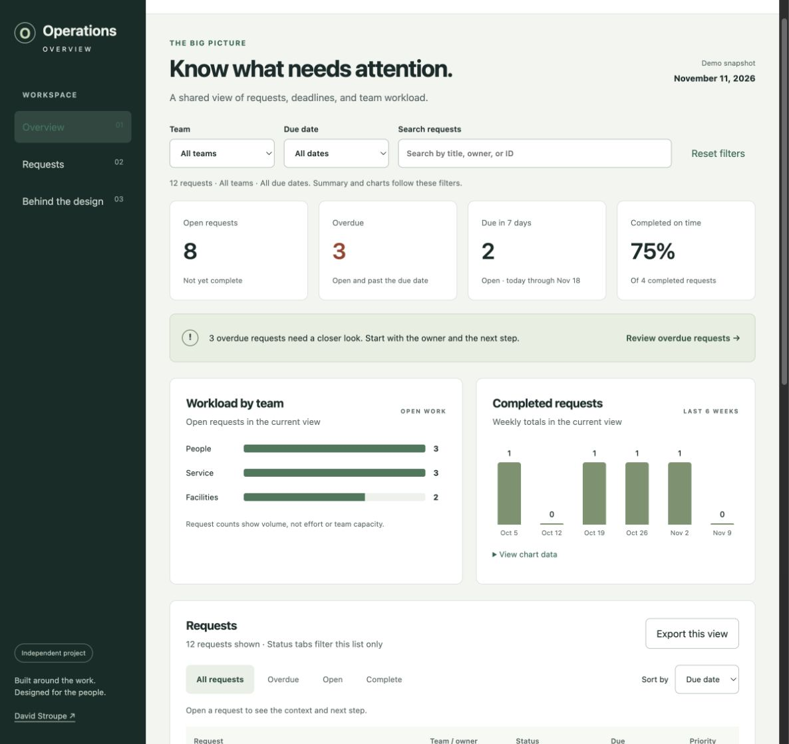

Independent project · November 2026
From a list of requests to a clearer next step.
A manager preparing for a team review should be able to find overdue work, understand what is holding it up, and see who needs to follow through. That is the problem this dashboard explores.
- My contribution
- Operational perspective and project direction, with AI assistance for design, code, and documentation.
- Who it is for
- A fictional team manager preparing for a weekly review. This is a design assumption, not a research finding.
- Tools
- Figma, HTML, CSS, JavaScript, and GitHub Pages.
- Where it stands
- Working concept. First version and technical review completed November 11, 2026. User testing is still ahead.

Why I chose this problem
In my professional work, I review requests, check the information available, and look for ways to make a tool more useful before I build it. I wanted a public project that lets me explore that kind of thinking without sharing customer applications or work data.
This concept starts with a simple question: what needs my attention, and what do I need to know before I follow up? The scenario, names, and data were created for this project. It is not a reconstruction of a government system.
What the first version needed to do
The scope is deliberately small: scan the work, narrow the view, open a request, and leave with its owner and next step. It is a review tool, so it does not assign work, send notifications, or change records.
That choice keeps the demo honest. A production application would need permissions, a dependable data connection, validation, audit history, and a plan for stale or failed updates. Those are outside this prototype.
How the experience fits together
- Scan. The summary shows open work, overdue items, upcoming deadlines, and completed work.
- Narrow. Team, date, and search filters update the summary, charts, and list together.
- Investigate. Status buttons narrow the list. Opening a request reveals the context and next step.
- Take it into the review. The CSV contains the current list, its work status, schedule indicator, and demo snapshot date.
The decisions that matter
Lead with attention, not old completed work
The first version sorted everything by due date. That put older completed requests ahead of work that still needed attention. The default now shows overdue work first, then other open work, then completed items. Due date and priority remain available as separate sorting options.
The tradeoff: the default is no longer one uninterrupted date sequence. The sort control makes that choice visible.
Keep work status separate from the deadline
A request can be both overdue and waiting for information. The first version showed only the overdue label in the list. The review added the underlying work status, and the export now carries both fields. That gives someone a reason to follow up, not just a red label.
Make filter boundaries clear
The summary follows the top filters. The status buttons only affect the list. Upcoming date ranges exclude overdue items, and the interface explains that beside the filters. The demo date now stays visible on a phone as well.
The tradeoff: two filter scopes take some explanation. A usability session will tell me whether that is clear enough or should be simplified.
Give the numbers context
The completion percentage includes the number of completed requests behind it. With no completed requests, it shows a dash. Workload counts requests, not effort or available capacity. The current week is labeled as partial so it is not mistaken for a completed week.
Let details open without losing your place
The request dialog keeps the list underneath it. It shows the owner, status, due date, and next step without sending someone to another page. Escape closes it and returns keyboard focus to the request they opened.
The tradeoff: a dialog works for this short summary. A longer record with editing, attachments, or a discussion history would need more space.
What changed during the review
The first pass got the core screen working. The next pass checked whether it was understandable, consistent, and easier to use. Along with the changes above, I increased small text, strengthened form borders, improved focus contrast in the sidebar, and added more checks for filtering, dates, sorting, and export behavior.

On a phone
Requests become labeled cards instead of a squeezed desktop table. The same owner, status, due date, and priority remain available. The review also checked the narrower layout so a person can read the page without horizontal scrolling.
What the project demonstrates
The result so far is a working dashboard with a documented set of decisions, editable Figma layouts, and repeatable checks. It gives a hiring team something they can inspect and try. It does not establish business impact, production scale, or a validated improvement in task completion.
The Figma file contains the layout studies and supporting review notes. It is not a fully wired prototype or a complete enterprise design system. The browser demo is the interactive version.
What I still need to learn
I want to watch people find an overdue request, explain the next step, and compare upcoming work across teams. The goal is to see where they hesitate and what they misunderstand. I have prepared a test plan, but those sessions have not happened yet.
A full screen reader and accessibility review also remains. The accessibility notes explain what has been checked and what has not.
How this was made
I provided the operational background and chose this as the project direction. An AI assistant helped create the Figma layouts, implement the demo, and draft these notes. I want to be clear about that contribution. My next step is to work through the design myself, collect feedback, and make decisions I can explain in an interview.